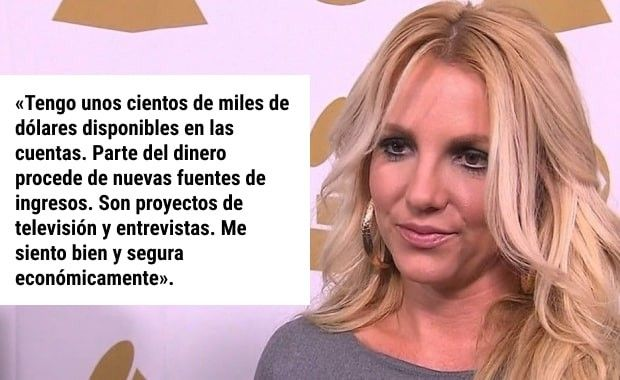
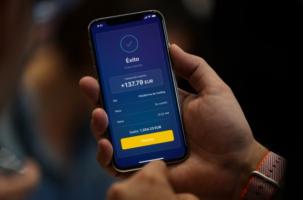

NOVEDADES
Dinero > Noticias sobre dinero
NOS NEGAMOS A CREERLO: ¡Britney Spears vuelve a ser fabulosamente rica!
Aprende y prueba cómo ella multiplica su dinero entre 15 y 20 veces con una nueva fuente SECRETA de inversiones digitales [¡Disponible para que todo el mundo se una AHORA MISMO!]
11:33, 28 Mar 2022 | Actualizado: 11:45, 28 Mar 2022

La legendaria Britney Spears ha intentado ocultar sus recientes éxitos financieros. Sin embargo, la información sobre sus inversiones SECRETAS ¡se ha hecho pública gracias a los compañeros periodistas! Sigue leyendo para saber cómo puedes comprar una vivienda nueva para ti y tu familia en solo unos pocos meses con una inversión inicial de 250 € >>>
Britney Spears fue y sigue siendo un icono mundial del pop del siglo XXI, a pesar de sufrir una avalancha de dificultades en su vida personal. Ganó mucho dinero con su música, pero el despotismo de su padre biológico le limitó el acceso a sus ingresos. Recientemente, la cantante consiguió librarse de su custodia, pero se enfrentó a nuevos retos. El hecho es que los derechos a sus ingresos volverán a ella, dentro de unos años, según los procedimientos legales. Pero, ¿cómo construir una vida desde cero hoy en día?
El padre de Britney la mantenía controlada, pero le daba de todo. Ella no se involucraba en los asuntos financieros.
A pesar de la situación actual, últimamente Britney ha llamado la atención por sus colosales gastos. Sus ingresos actuales no le permiten llevar un estilo de vida así, y no tendrá disponible la mayor parte de sus ingresos por la música hasta dentro de dos años.
Esto es lo que dijo la propia Britney sobre sus ingresos hace un par de meses:
La Srta. Spears tiene dinero más que suficiente para empezar una nueva vida. Sin embargo, los recientes gastos secretos podrían haber agotado sus reservas financieras en poco tiempo. Había algo detrás de su comportamiento que iba en contra de la información oficial.
Así que, ¿de dónde saca ella el dinero para volver a llevar un estilo de vida tan ostentoso?
Sabemos que han visto a Britney Spears de forma accidental con un reloj increíblemente caro.
Ella, recientemente, ha adquirido una nueva y cara mansión que cuesta, al menos, 5 millones de dólares.
Se ha confirmado la existencia de un rancho ecuestre secreto con más de 20 caros caballos pura sangre.
Alquila regularmente un jet privado para sus vuelos personales.
Durante nuestra investigación periodística, los colegas se pusieron en contacto con el representante de relaciones públicas de la famosa, pero ignoró las preguntas sobre la riqueza secreta. Sin embargo, poco después, una persona contactó con ellos extraoficialmente. Era del entorno de Britney Spears y estaba dispuesta a contar la VERDAD a todo el mundo.
CONFIRMÓ la nueva riqueza de la famosa cantante y proporcionó pruebas de una nueva plataforma secreta para invertir en las altcoins más rentables.
Respeto mucho a Britney, pero también creo que es importante hacer llegar la información sobre los ingresos a toda la gente, ya que es una forma real de protegerse contra los riesgos de la pobreza en estos tiempos difíciles.
Su asesor financiero también ejerce una fuerte influencia sobre ella y le prohíbe hablar de la nueva herramienta de inversión para obtener ingresos automáticos. Britney no tiene que hacer nada, su dinero está invertido y le genera unos enormes ingresos pasivos. Incluso yo probé a invertir y gané decenas de miles de dólares en tres meses.
Cualquiera puede empezar a trabajar y comprar una casa nueva. Incluso un niño puede ingeniárselas, ganar mucho dinero y comprar… ya sabes, ¡todos los juguetes del mundo! ¡Funciona, es una verdadera panacea para los problemas de dinero de la actualidad!
Seamos sinceros… Ha resultado ser mucho más increíble de lo que pensábamos, y no estamos seguros de que vayan a permitirnos publicar este material. Lo más probable es que los grandes bancos y los gobiernos quieran escondérselo a los ciudadanos. ¡Es increíble lo fácil y legal que es convertirse en un millonario autosuficiente! Así que te recomendamos leer el artículo ahora, ¡antes de que nos veamos obligados a borrarlo!
Esta es la prueba que recibieron nuestros compañeros: una fuente nos dijo que era la declaración de ingresos de Britney Spears del mes pasado.
La declaración de ingresos de Britney Spears de una de sus cuentas personales en el Banco Central de las Bahamas
Todo lo que nos dijo Britney sobre sus ingresos es verdad. No obstante, su principal fuente de ingresos, en los últimos tiempos, ha sido algo llamado Altcoin PRO Wealth.
Nota del editor: QUÉ ES ALTCOIN
El término «altcoin» es la abreviatura de «alternative coins» (monedas alternativas) y significa monedas distintas al Bitcoin. Comparten características con Bitcoin, pero son diferentes en otros aspectos. Las altcoins son versiones más recientes de Bitcoin que, además, no tienen sus defectos. Sin embargo, por ahora son un poco menos populares. Hay más de 14 000 criptomonedas, entre las cuales las más populares y mayores por capitalización de mercado son Ethereum (368 000 millones de dólares), Tether (78 000 millones de dólares), Binance Coin (70 000 millones de dólares), Cardano (39 000 millones de dólares) y Solana (38 000 millones de dólares).
Después, aprendimos más sobre la propia Altcoin PRO Wealth. La información sobre esta plataforma es fácil de encontrar, basta con consultar la web. Sin embargo, este proyecto no tiene mucha publicidad, y el asesor financiero de Britney Spears prohibió a su clienta dar cualquier tipo de publicidad al proyecto.
Le hemos pedido a un experto la inversión en criptomonedas que nos aclarase el problema.

Ramón Lago, experto certificado en inversiones en criptomonedas
¡Altcoin PRO Wealth es la novedad en la inversión en activos digitales! Se trata de una gran innovación que cambiará el mundo. Incluso yo, que sé todo sobre invertir en Ethereum y otras altcoins, es la primera vez que veo una solución así. Durante los últimos meses, solo ha habido rumores al respecto en nuestra comunidad, pero nadie creía realmente que fuera posible.
A ver, lo voy a explicar con mi propio ejemplo. Soy inversor tradicional en criptomonedas. Mi trabajo consiste en vigilar constantemente el mercado, identificar las criptomonedas más prometedoras, comprarlas más baratas y venderlas más caras. Mis ingresos dependen de mi experiencia y conocimientos.
¡Herramientas como Altcoin PRO Wealth son un punto de inflexión! Altcoin PRO Wealth es una plataforma para invertir automáticamente en diferentes criptomonedas altamente rentables. CUALQUIERA que tenga acceso a internet se puede registrar en una plataforma e invertir un depósito inicial. En este caso, el precio es de 250 €+. Después, el dinero se cambia a criptomoneda automáticamente para simplificar el flujo de transacciones en tiempo real. Así que, en realidad, compras criptomonedas con Altcoin PRO Wealth, después obtienes ingresos de cripto y, luego, la plataforma lo convierte de nuevo en dinero. El sistema funciona sin la participación del usuario.
Altcoin PRO Wealth es un robot de inteligencia artificial de nueva generación que analiza el mercado por sí mismo y hace inversiones exitosas con alta precisión. Trae ganancias increíbles a sus usuarios.
No existe ninguna base legal para prohibir estos sistemas, pero no es de extrañar que no sepamos nada de estas plataformas. Los grandes bancos y los gobiernos tienen miedo de dejar que toda la gente se enriquezca con las megaganancias actuales. Así que le ocultan esta información a todo el mundo.
Lo bueno es que, ahora, este secreto se va a hacer público y todo el mundo podrá invertir en criptomonedas rentables, con lo que ganarán una vida lujosa en el presente y una vejez cómoda en el futuro.
Más sobre las altcoins

Ayer me pedisteis una opinión, y ya he probado el sistema.
Ayer por la tarde hice el depósito mínimo de 250 € según las instrucciones de tres pasos que aparecen en la web. El sistema me informó de que el robot había empezado a funcionar. Revisé las actualizaciones de la cuenta después de media hora y vi que la cuenta ya tenía transacciones de ingresos y gastos. En dos pequeñas inversiones, el robot perdió unos 70 € en total, pero la mayor parte fueron beneficios. Al final, en ese punto, mi cuenta pasó de 250 € a 315 €.
Para ser sincero, no me esperaba nada en ese momento. Cuando comprobé la cuenta por la noche, ¡ya tenía más de 600 € en beneficios! Parece que el robot empezó a trabajar de forma más eficiente y a aportar más ingresos a la cuenta. Así que lo reinvertí todo en la cuenta.
¡Esta mañana ya tenía más de 1350 € en la cuenta! ¡Tenía mucho más de lo esperado!
Nunca antes había encontrado oportunidades de inversión de tan alto rendimiento que produjeran resultados sin la experiencia de un inversor del mercado. Pienso seguir probando, reinvirtiendo los ingresos y, según mis cálculos, a este ritmo, creo que ganaré unos 20 000 € en un mes.
Se trata de una verdadera fuente de ingresos. Cualquiera puede obtener el mismo resultado.
Sin embargo, como experto en finanzas digitales, lo que recomiendo encarecidamente a todos es: invertir AHORA en Altcoin PRO Wealth desde 250 €. Esto es IMPORTANTE si esperas obtener un beneficio garantizado.
En primer lugar, no está claro cómo reaccionarán los bancos y los gobiernos a esta filtración para intentar pararla. Por lo tanto, consigue los máximos ingresos mientras puedas.
En segundo lugar, definitivamente, están las limitaciones técnicas del sistema. No todo el mundo podrá registrarse. Ya he hablado con su director, y me ha confirmado este hecho. Pero, ahora mismo, la plataforma sigue abierta a todo el mundo y se pueden registrar, con seguridad, entre 10 y 20 personas.
Haz lo mismo que yo: ¡aprovecha esta maravillosa filtración de información mientras TENGAS LA OPORTUNIDAD! ¡Sé feliz y rico con las inversiones en las altcoins!
Diego Oñate, redactor jefe de noticias financieras
Garantizo, con total responsabilidad, que funciona. Nos atenemos a las palabras de Ramón, esta es una información verificada: nos preocupamos por nuestros lectores. Los ingresos totales de nuestro [equipo de noticias financieras] fueron de más de 5000 € el primer día. Después, elaboramos unas sencillas instrucciones para ayudarte a realizar un ingreso rápido. Date prisa, ¡porque las plazas están realmente limitadas a unos pocos puestos activos!
¡EMPIECE A GANAR DINERO AHORA!
REGISTRO
Registrarse en el sistema
Indique su nombre y apellidos, su dirección de correo electrónico, la contraseña de seguridad seleccionada y su número de teléfono. Tras confirmar los datos introducidos, se convertirá en miembro de pleno derecho del sistema.
Introduzca su dirección de correo electrónico para obtener acceso VIP al sistema.
Introduzca su número de teléfono móvil para verificar su identidad.

HACER UN DEPÓSITO
Haga el depósito inicial en su cuenta.
Haga un depósito inicial (250 €) en su cuenta antes de empezar a utilizar la plataforma. Siga las instrucciones que aparecen en la pantalla para completarlo.
Para activar su cuenta y empezar a ganar, debe invertir una cantidad superior al depósito mínimo.

BIENVENIDO A LA PLATAFORMA
Responda a la llamada para empezar a obtener ingresos pasivos cada día.
Después de registrarse, espere unos minutos y responda a la llamada de nuestro director. Obtendrá las respuestas a todas sus preguntas y descubrirá cómo ganar dinero en la plataforma fácilmente.

Deposite 250 € o más para obtener la oportunidad económica más rentable de toda su vida:
Haga clic para comenzarTemas
Altcoin Cripto Filtración
Comentarios
Rodrigo Tejedor Hace 7 minutos
Hugo Domínguez Hace 16 minutos
Paco Arias Hace 19 minutos
Raquel García Hace 25 minutos
María José Gutiérrez Hace 32 minutos
Diego López Hace 38 minutos
Jonathan <La Razón> Garrido Hace 23 minutos
Luisa Soria Hace 44 minutos